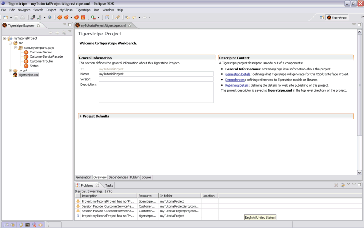

In Eclipse, a perspective defines the initial set and layout of project views in the workbench window. Typically, plug-ins to Eclipse contribute their own perspective to group and organize functionalities of the product.
Tigerstripe Workbench however, contributes a specific Tigerstripe perspective, capturing the actions, views, and layout required to accomplish all the tasks related to designing, documenting, and generating Service Contracts. Through this perspective, you can create, edit, and publish Service Contracts using Tigerstripe.
The Tigerstripe perspective contains the usual components of an Eclipse perspective, including the following:

The Tigerstripe perspective is associated with Tigerstripe projects and is automatically started whenever you open a Tigerstripe project. However, you can open the Tigerstripe perspective at anytime by completing the following steps:
This will restore your current Eclipse layout for the Tigerstripe perspective.
© copyright 2005, 2006, 2007 Cisco Systems, Inc. - All rights reserved